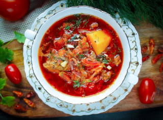

Назад
Борщ классический с мясом говядины и свинины
1.5 часа
12 порций

1.5 часа
12 порций
Ингридиенты:
Свинина с косточкой - 1-1,5 кг
Картошка - 700 г
Свекла - 500 г
Лук крупный - 2 шт
Чеснок
Помидоры крупные - 2 шт
Морковь крупная - 1 шт
Перец салатный - 2 шт
Капуста - 500-700 г
Сало - 150 г
Уксус - 1 ст. л.
Зелень (укроп, петрушка)
Пошаговый рецепт
- Подготовьте продукты по списку.
- В холодную воду положить мясо с косточкой. Вскипятить, снять всю накипь с поверхности бульона. Варить до готовности мяса (проверять на мягкость).
- Залить помидоры кипятком и оставить на 5 минут.
- Сало порезать мелким кубиком, на сковороде выжарить жир и удалить шкварки, по желанию можно добавить подсолнечное масло.
- Чеснок мелко порубить и обжарить на горячем жире. Добавляем порезанный соломкой лук и обжариваем до прозрачности.
- Затем кладем порезанную соломкой морковь и также жарим. Свеклу режем соломкой и тоже жарим.
- Пока жарится свекла, снимаем шкурку с помидоров и режем их мелким кубиком. В жареные овощи добавляем порезанные помидоры, перемешиваем.
- В заправку насыпаем 1 ч. л. перца молотого, 1 ст. л. сахара, 1 ст. л. соли и вливаем 1 ст. л. уксуса. Перемешиваем и тушим на маленьком огне, время от времени помешивая. Когда влага испарится, выключаем.
- Готовое мясо достаем, охлаждаем, отделяем мясо от костей, режем на кусочки и отправляем в кастрюлю.
- Очищенный картофель режем кубиком и отправляем в кастрюлю.
- Когда картофель сварится (можно проверить на мягкость вилкой или ножом), высыпаем готовую заправку в кастрюлю, перемешиваем.
- Засыпаем нашинкованную капусту, перемешиваем.
- Добавляем нарезанный салатный перец и присыпаем для аромата зеленью. Доводим борщ до кипения, варим 2 минуты, пробуем на соль (если нужно, досолить по вкусу). Выключаем огонь, накрываем крышкой и настаиваем украинский борщ со свининой 5 минут.
- Пока борщ настаивается, режем соленое сало, лук, хлеб или пампушки, можно и 100 грамм водочки)